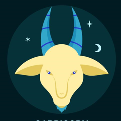

Signo Zodiacal: Capricornio

Capricornio es conocido por su ambición, responsabilidad y pragmatismo.
Características
Elemento: Tierra
Planeta regente: Saturno
Fecha: 22 de diciembre - 19 de enero
Compatibilidad
Signo Compatible
Porcentaje
Virgo
90%
Tauro
85%